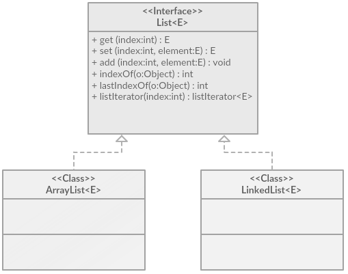
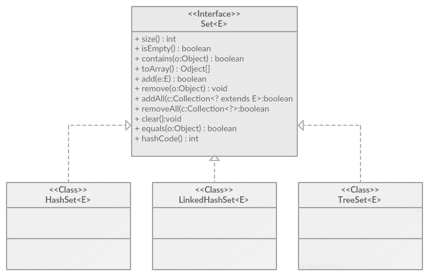
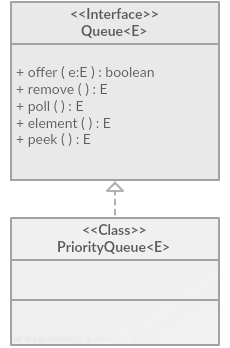
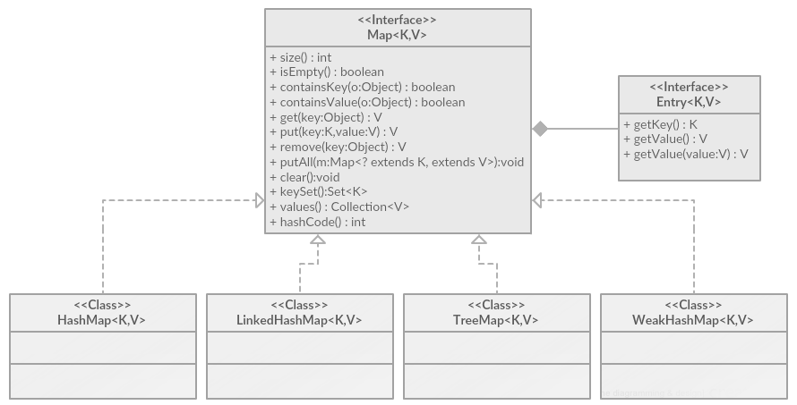

I don't really like well-known high-level languages like javabecause of the large number of abstractions. Their stay here is due to my current job as a teacher. Perhaps my opinion will change in the process, but I strongly doubt it. Until now, most of the knowledge on such languages will be in Russian, because I see no point in translating temporary entities into English, which will very soon disappear into the abyss.
Generic Types
Класс, который описывает логику работу, но не описывает типы данных, с которыми происходят действия. Настраиваемые типы в Java, аналог шаблонных классов в C++.
List
Базовый тип для коллекций последовательностей.
Неупорядоченны, допускают наличие элементов с равными значениями. Элементы в последовательностях пронумерованы и допускают обращение по индексу.

ArrayList
Элементы в этой коллекции располагаются в памяти, как в массиве — непрерывно друг за другом. В отличие от массива может изменять свой размер.
Если при добавлении в ArrayList очередного элемента окажется, что capacity уже исчерпана, будет выполнено автоматическое увеличение размера коллекции. Сначала создается новая коллекция, размером (N * 3) / 2 + 1, где N — текущее значение capacity. В эту новую коллекцию переносятся данные из заполненной коллекции, и затем добавляется новый элемент. Старая коллекция удаляется.
Элементы в ArrayList можно удалять. При удалении какого-либо элемента, все элементы, располагающиеся справа от него, смещаются на одну позицию влево. Обратите внимание, что capacity коллекции при этом не изменяется.
В отличие от C#, где класс ArrayList содержит свойство capacity и позволяет увидеть его значение, в Java ситуация иная. Разработчики Java говорят, что нам не надо знать конкретное значение capacity, и не предоставляют нам возможность увидеть его. Хотя в Java документации по ArrayList можно увидеть, что изначально ArrayList создается со значением capacity, равным 10, это значение, вообще говоря, может отличаться в реализации разных JVM. Тип элементов коллекции ArrayList может быть любым. Он задается при создании коллекции с помощью generic:
ArrayList<String> list1 = new ArrayList<String>();
//Creating arraylist of String
ArrayList<Fish> list2 = new ArrayList<Fish>();
//Creating arraylist of type Fish
ArrayList<Object> list3 = new ArrayList<Object>();
//Creating arraylist of Object
ArrayList имеет три вида конструкторов:
ArrayList()
//Создает пустую коллекцию;
ArrayList(Collection <? extends E> c)
//Создает коллекцию, в которую при создании добавляются все элементы коллекции c;
ArrayList (int capacity)
// Создает коллекцию с начальной емкостью capacity;
LinkedList
Двухсвязный список. Кроме интерфейса List класс LinkedList еще реализует интерфейсы List, Dequeue и Queue. Поэтому эта коллекция предоставляет функциональность FIFO и LIFO. Список допускает наличие одинаковых элементов и элементов со значением null.
Каждый элемент содержит непосредственно данные и два указателя: один на следующий элемент, другой — на предыдущий. Элементы списка размещаются в памяти произвольно и, в отличие от массива, не занимают непрерывный сегмент памяти. Поэтому доступ к произвольному элементу списка гораздо медленнее, чем в массиве.
Он лучше подходит в тех ситуациях, когда вам требуется интенсивно добавлять или удалять элементы коллекции.
LinkedList имеет два вида конструкторов:
LinkedList ()
// Создает пустую коллекцию;
LinkedList (Collection <? extends E> c)
// Создает коллекцию, в которую при создании добавляются все элементы коллекции c.
LinkedList<String> ll=new LinkedList<String>();
ll.add("one");
ll.add("two");
ll.add("three");
ll.add("four");
ll.add("five");
System.out.println("List:"+ll);
ll.addLast("six");
ll.add(3,"three");
ll.addFirst("zero");
System.out.println("List:"+ll);
Для добавления элементов в конец списка можно использовать методы add(value) и addLast(value), а для добавления в начало списка — addFirst(value). Все эти методы выполняются за постоянное время. Другими словами, время выполнения этих действий не зависит от размера коллекции, в то время как есть действия, время выполнения которых увеличивается с увеличением размера коллекции.
Set
Базовый для коллекций, являющихся неупорядоченными и не допускающих наличия элементов с равными значениями.

HashSet
Оптимизирована для быстрого поиска уникальных элементов. Для каждого добавляемого элемента эта коллекция вычисляет хеш код, который затем использует как ключ для доступа к этому элементу. Сам хеш код увидеть невозможно.
| HashSet() | Создаёт пустую коллекцию |
| HashSet (Collection <? extends E> c) | Создает коллекцию, в которую при создании добавляются все элементы коллекции c; |
| HashSet (int capacity) | Создает коллекцию с начальной емкостью capacity; |
| HashSet (int capacity, float loadfactor) | Создает коллекцию с начальной емкостью capacity и с заданным фактором загрузки. |
Фактор загрузки — значение, которое определяет, при каком уровне заполнения коллекции её емкость автоматически увеличивается. Когда количество элементов в коллекции превышает произведение фактора загрузкии текущей емкости, выполняется автоматическое увеличение коллекции
LinkedHashSet
Хранит элементы коллекции в порядке их добавления. Немного медленнее, чем HashSet.
Конструкторы идентичны HashSet.
TreeSet
Для хранения своих элементов использует дерево и поэтому всегда содержит элементы в отсортированном по возрастанию порядке. Обработка элементов в TreeSet выполняется медленнее, чем в HashSet или LinkedHashSet.
| TreeSet () | Создает пустую коллекцию |
| TreeSet (Collection <? extends E> c) | Создаёт коллекцию, в которую при создании добавляются все элементы коллекции c, сортированные в порядке, естественном для c; |
| TreeSet (Comparator<? super E> comparator) | Создает пустую коллекцию с порядком сортировки, заданным в компараторе comparator; |
| TreeSet(SortedSet<E> s) | Создаёт коллекцию, содержащую те же элементы, что и коллекция s, с теми же правилами сортировки. |
Queue
Базовый для коллекций, хранящих свои элементы в порядке, определяющем очередность их обработки. У этого интерфейса есть единственный прямой класс наследник — PriorityQueue.

PriorityQueue
Упорядочивает элементы либо в порядке их естественной сортировки (задаваемой интерфейсом comparable), либо в порядке сортировки, определенной в интерфейсе Comparator, переданном в коллекцию через конструктор. По умолчанию очередь реализует принцип FIFO.
| PriorityQueue () | Создает пустую коллекцию с естественным порядком размещения; |
| PriorityQueue (Collection <? extends E> c) | Создает коллекцию, в которую добавляются все элементы коллекции c и хранятся в естественном для c порядке; |
| PriorityQueue (int capacity) | Создает коллекцию с начальной емкостью capacity; |
| PriorityQueue (int capacity, Comparator <? super E> comparator) | Создает коллекцию с емкостью capacity и с порядком хранения, заданным в компараторе comparator; |
| PriorityQueue (SortedSet<E> s) | Создает коллекцию, содержащую те же элементы, что и коллекция s, с тем же порядком хранения |
| PriorityQueue (PriorityQueue <E> q) | Создает коллекцию, содержащую те же элементы, что и коллекция q, с тем же порядком хранения. |
Map Interface
Базовый для коллекций, элементы которых являются не отдельными значениями, а парами «ключ-значение». Ключ играет роль индекса для доступа к конкретной паре. Ключи в коллекции уникальны. Типы ключа и значения могут быть произвольными и отличаться друг от друга. Такие коллекции также называют отображениями или словарями (Dictionary), или ассоциативными массивами.
Map никак не связан с интерфейсом Collection. Map входит в состав JCF, как и интерфейс Collection.

HashMap
Неупорядоченная коллекция пар «ключ-значение». Ключу каждой пары сопоставляется хеш код, что ускоряет работу с элементами коллекции. Как ключ, так и значение могут быть равны null. Элементы коллекции хранятся в неупорядоченном виде.
| HashMap () | Создает пустую коллекцию с емкостью 16 и фактором загрузки 0.75 |
| HashMap (int capacity) | Создает коллекцию с начальной емкостью capacity и фактором загрузки 0.75 |
| HashMap (int capacity, float loadfactor) | Создает коллекцию с емкостью capacity и с фактором загрузки loadfactor; |
| HashMap (Map<? extends K,? extends V> m) | Создает коллекцию, содержащую те же элементы, что и коллекция m. |
LinkedHashMap
Расширяет HashMap тем, что создает из элементов (пар «ключ-значение») связный список, хранящий элементы в коллекции в порядке их добавления. Работа с этой коллекцией несколько медленнее, чем с коллекцией HashMap.
| LinkedHashMap () | Создает пустую коллекцию с емкостью 16 и фактором загрузки 0.75; |
| LinkedHashMap (int capacity) | Создает коллекцию с начальной емкостью capacity и фактором загрузки 0.75; |
| LinkedHashMap (int capacity, float loadfactor) | Создает коллекцию с емкостью capacity и с фактором загрузки loadfactor; |
| LinkedHashMap (int capacity, float loadfactor, boolean accessOrder) | Создает коллекцию с емкостью capacity и с фактором загрузки loadfactor и порядком доступа к
элементам; если accessOrder равен false — элементы в коллекции будут перебираться в порядке их вставки; если accessOrder равен true — элементы в коллекции будут перебираться в порядке их последней обработки, созданной методами put(), get() и другими; |
| LinkedHashMap ((Map<? extends K,? extends V> m)) | Создает коллекцию, содержащую те же элементы, что и коллекция m. |
TreeMap
Использует для хранения своих элементов дерево, поэтому элементы хранятся в отсортированном порядке по возрастанию. Сортировка происходит в естественном порядке или на основе заданного компаратора.
Время доступа к элементам TreeMap мало, поэтому эта коллекция является очень хорошим выбором в том случае, когда часто надо находить и выбирать из коллекции требуемые элементы.
| TreeMap () | Создает пустую коллекцию сортированную в естественном порядке; |
| TreeMap (Comparator<? super K> comparator) | Создает пустую коллекцию с порядком сортировки, заданным в компараторе comparator; |
| TreeMap ((Map<? extends K,? extends V> m)) | Создает коллекцию, содержащую те же элементы, что и коллекция m с естественным порядком сортировки; |
| TreeMap (SortedMap<K,? extends V> s) | Создает коллекцию, содержащую те же элементы, что и коллекция s с тем же порядком сортировки. |
WeakHashMap
Использует для обращения к значениям своих элементов так называемые «слабые ссылки» (weak reference). Эти ссылки особым образом обрабатываются системой сборки мусора.
Как только ключ какого-либо элемента коллекции перестает использоваться вашим кодом, этот элемент удаляется системой сборки мусора. Если код каким-либо образом удалил ключ какого-то элемента такой коллекции, то при следующем запуске сборки мусора этот элемент будет удален из коллекции. Это приведет к «странным» последствиям, таким как уменьшение размера коллек- ции.
Коллекция такого вида полезна, если для вас важно экономить ресурсы, если необходимо хранить очень большие объемы данных. Другим полезным качеством такой коллекции является отсутствие утечек памяти,которые обычно создаются «потерянными» ссылками.В случае WeakHashMap потерянные ссылки удаляются сборщиком мусора, исключая утечку памяти.
| WeakHashMap () | Создает пустую коллекцию с емкостью 16 и фактором загрузки 0.75; |
| WeakHashMap (int capacity) | Создает коллекцию с начальной емкостью capacity и фактором загрузки 0.75; |
| WeakHashMap (int capacity, float loadfactor) | Создает коллекцию с емкостью capacity и фактором загрузки loadfactor; |
| WeakHashMap ((Map<? extends K,? extends V> m)) | Создает коллекцию, содержащую те же элементы, что и коллекция m. |
Синхронизация коллекций
Все рассмотренные выше коллекции не являются синхронизированными, а следовательно, не являются потокобезопасными. Если выполнять доступ к коллекции одновременно из нескольких потоков, это может привести к исключительной ситуации
Разработчики коллекций предоставили нам механизм превращения не синхронизированной коллекции в синхронизированную, чтобы избавить от проблем самостоятельного выбора способа синхронизации и выполнения этой синхронизации.
Collections.synchronizedList()
Collections.synchronizedMap()
Collections.synchronizedSet()
Collections.synchronizedSortedList()
Collections.synchronizedSortedSet()